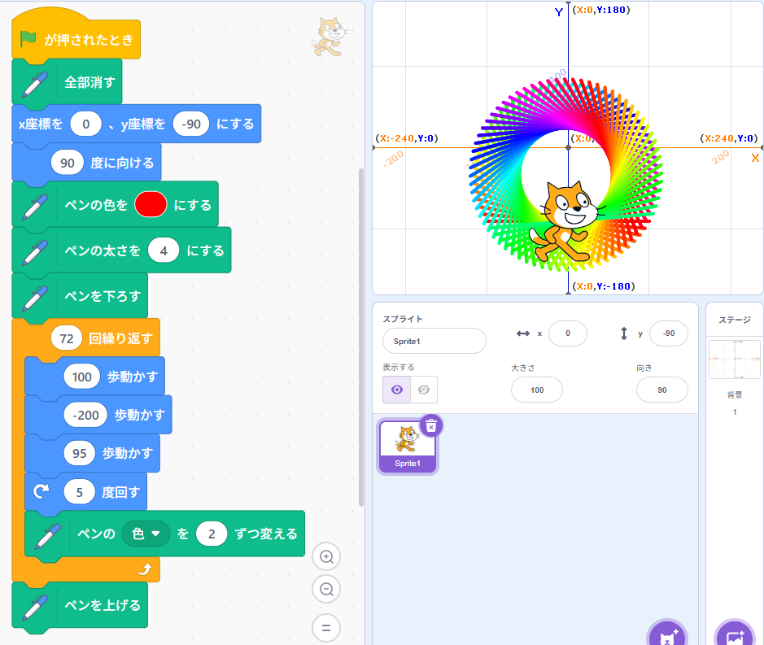
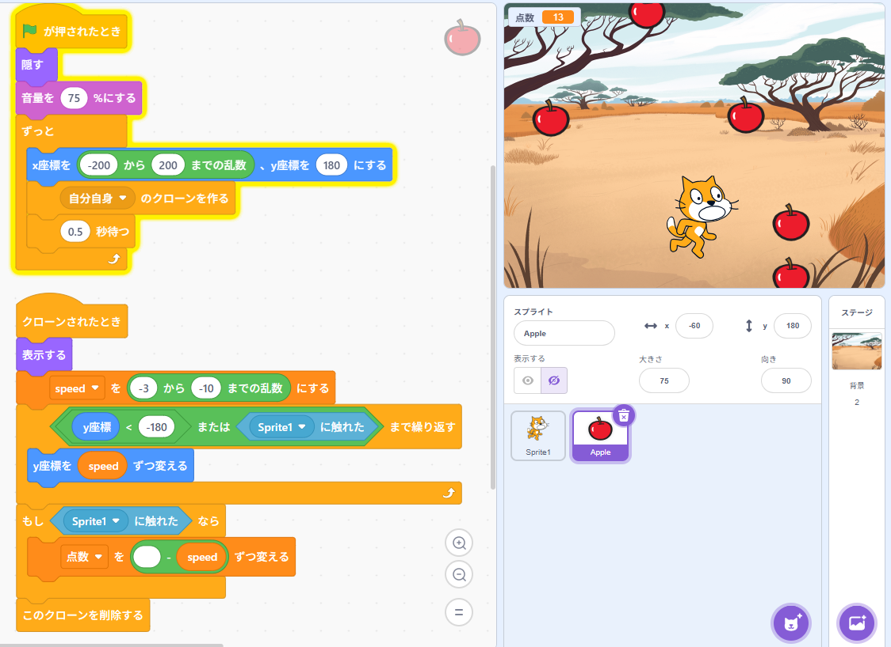

1週目のレポート ： 公大高専１年実習I-1
1a班15番 なゆた
第1週目
1-1 サイエンスアート

1.内容
サイエンスアートでは、Scratchのペン機能を使って模様を描いた。
ねこのスプライトが動いたり、回転したりするプログラムを作った。
2.感想
シンプルな移動と回転で規則性のある図形を描くことができて楽しかった。
sin,cosとかを使って、リサージュ図形を描いてみたいと思った。
1-2 ゲーム

1.内容
プレイヤーの入力を受け取ってキャラクターを動かしたり、りんごをとった時に点数を増やしたりした。
また、自分でクローンを使ってたくさんリンゴを落とすようにもしてみた。
2.感想
クローンを使うことでより楽しいゲームを作ることができた。
リンゴとの当たり判定をリンゴのスプライト内で完結させることで
当たり判定がバグらないように気を付けた。
1-3 ホームページ作成
私のホームページ
1.内容
ホームページ作成では、文章を書き換えて自分のホームページを作った。
<br>を使って改行したり、<h1>で大きなタイトルにすることができると学んだ。
2.感想
GitHubを使えばhtmlで作ったホームページを簡単に公開できると知って、驚いた。
ホームページを公開するにはwordpressとかのサイト作成ツールが必要だと思っていた。
各ページへのリンク
1週目のレポート
2週目のレポート
3週目のレポート
私のホームページ